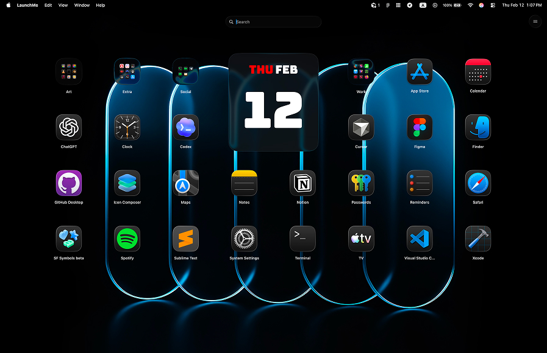

LaunchMe vs Raycast. Best Mac App Launcher for macOS 26
People often ask which is better — LaunchMe or Raycast. The honest answer is that they're not really the same type of app. But if you're looking for a Launchpad replacement on macOS 26 Tahoe, this comparison will save you time.
LaunchMe vs Raycast: the core difference
Raycast is a keyboard-driven command palette. Press a hotkey, type a command or app name, and Raycast runs it. It's designed for people who keep their hands on the keyboard and want to control their Mac through text commands. It also has an extension store where you can connect Slack, GitHub, Linear, Notion, and many other tools.
LaunchMe is a visual app grid launcher — built to replace macOS Launchpad. You open it with a hotkey, Hot Corner, or trackpad gesture, and you get a fully customizable grid of your apps. Organize them into folders and pages, add widgets, switch between saved Spaces for different setups, or launch a whole set of apps at once with Workflows.
Raycast is for people who think in commands. LaunchMe is for people who want a fast visual home base for their Mac.
Feature comparison table
The table below shows what LaunchMe offers (Free and Pro) versus Raycast. A lot of launcher-specific features simply aren't in Raycast — it's a different kind of tool.
Sources: LaunchMe on Mac App Store, Raycast official website, Raycast Pro page.
Where Raycast is limited compared to LaunchMe
No visual app grid — Raycast isn't a Launchpad replacement
Raycast doesn't show a visual grid of your apps — it's a search bar, not a launcher screen. If you upgraded to macOS 26 Tahoe and lost Launchpad, Raycast won't fill that gap. LaunchMe was built for exactly that job.
No Spaces — no way to save and switch between full setups
LaunchMe Spaces let you save your entire setup — apps, layout, widgets, wallpaper — as a named Space. Switch between Work, Gaming, or Personal mode with one hotkey, or schedule it to change automatically by time of day. Raycast has nothing like this.
No Workflows — no one-click multi-app launch
LaunchMe Workflows open a whole set of apps and folders with a single click. Each Workflow has a custom name and icon and acts like a regular app in your grid. Raycast has Script Commands that can do something similar, but you need to write scripts to set them up.
No dynamic wallpapers
LaunchMe has two animated wallpapers built in. The Dynamic Sun wallpaper moves the sun across the sky based on your local time — sunrise, daytime, sunset, night with stars. The Dynamic Weather wallpaper pulls real weather data for any city and changes the scene to match: clear, cloudy, rain, thunderstorm, or snow. Raycast has no wallpaper system.
No themes, widgets, or custom icons
LaunchMe has Glass and Flat themes, custom app icons (any PNG or JPG), a set of Clear Colored icons, and widgets for Calendar, Photo, GIF, Text, and Animations. Raycast does have custom themes, but it's a Pro-only feature ($8/month+). LaunchMe Pro is available as a one-time Lifetime purchase.
Raycast is keyboard-only — no Hot Corners or gestures
LaunchMe opens with a hotkey, a Hot Corner, or a trackpad gesture — all free. Raycast only works with a keyboard shortcut.
Clipboard History is behind Raycast's paywall
Raycast lists "unlimited Clipboard History" as a Pro feature. In LaunchMe it's free — text, images, files, and links, all saved automatically.
Raycast isn't on the Mac App Store
Raycast is distributed outside the App Store. LaunchMe goes through Apple's review and privacy checks. That matters if you care about what permissions an app can request and how updates are vetted.
Where Raycast wins over LaunchMe
- Extensions ecosystem: Raycast has thousands of community extensions — Slack, GitHub, Linear, Notion, and much more. LaunchMe doesn't try to compete here; it's focused on the launcher itself.
- AI assistant: Raycast Pro has an AI chat that can answer questions, draft text, and run automations. LaunchMe doesn't have this yet — but Ask AI is coming in a future update, as on-device AI with no queries sent outside your Mac.
- Quicklinks and Snippets: useful if you spend most of your day navigating URLs or reusing text blocks.
- Window Management: Raycast Pro can resize and arrange windows. LaunchMe doesn't do this — it's a launcher, not a window manager.
If integrations and keyboard commands are your whole workflow, Raycast is probably the better fit for that. But if you need a proper app launcher that replaces Launchpad and gives you real visual control over your setup, LaunchMe does the job Raycast can't.
Pricing comparison
Raycast is free at the base level, but most of what makes it powerful — AI, Clipboard History, Cloud Sync, Custom Themes, Window Management — sits behind a Pro subscription starting at $8/month. No lifetime option, subscription only.
LaunchMe has a solid free tier that covers daily use. The Pro plan unlocks themes, widgets, live wallpapers, custom icons, Spaces, and Workflows. You can pay Monthly, Yearly, or buy a Lifetime license once and be done with it. There's also a 7-day free trial to test Pro before you commit.
Why LaunchMe is the better Launchpad replacement for macOS 26
- Visual app grid: replaces macOS Launchpad with a richer, fully customizable grid interface.
- Spaces: switch between complete desktop setups (work, gaming, personal) in one click.
- Workflows: launch multiple apps and folders at once with a single automation preset.
- Dynamic wallpapers: animated Sun and Weather backgrounds that react to real time and real weather.
- Hot Corners and gestures (Free): invoke the launcher without lifting your hands off the trackpad.
- Clipboard in Free tier: no paywall for copying and pasting your recent history.
- Mac App Store: trusted distribution with Apple privacy review.
- Lifetime purchase option: pay once, no monthly subscription required.
Multi-language support
LaunchMe is available in 11 languages: English, Chinese, Japanese, Korean, German, Italian, Spanish, Russian, Portuguese, Hindi, and Turkish.
Verdict
These two apps don't really compete for the same user. Raycast is a command bar for keyboard-first workflows and developer integrations. LaunchMe is a visual app launcher for people who want a proper home base on their Mac — with organization, customization, and real automation built in.
If you lost Launchpad after upgrading to macOS 26 Tahoe and want something better, LaunchMe is the right pick. Raycast won't replace that. LaunchMe will.
You can download LaunchMe on the Mac App Store and try Pro features free for 7 days.